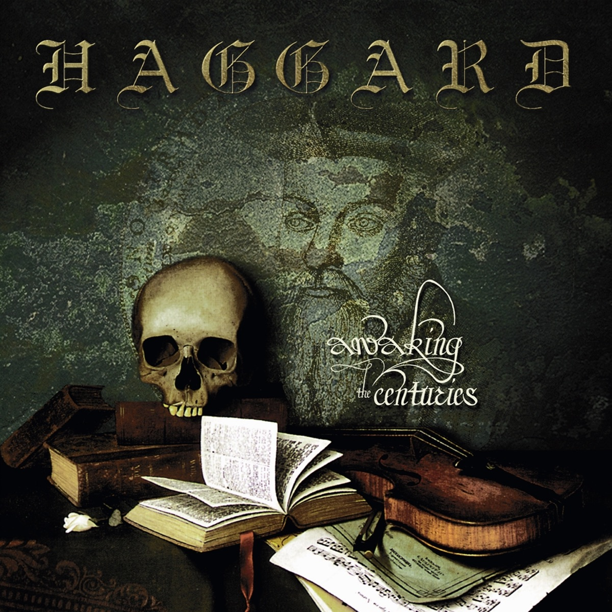

Álbum Awaking the Centuries

Haggard - Awaking the Centuries
Genero: Metal Sinfónico
Duración: 37:39 min
Año: 2000
Discografía: Drakkar Entertainment
Genero: Metal Sinfónico
Duración: 37:39 min
Año: 2000
Discografía: Drakkar Entertainment